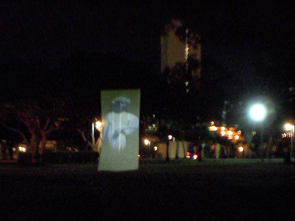

1000 DAYS OF THEORY
The Aura of the Digital
Michael Betancourt

Michael Betancourt. Spook: The Ghost of Slavery Past, 2003.
Preface
By dividing the interpretation of an art work into several distinct "levels" it becomes possible to recognize a fundamental distinction between
digital and non-digital art works, as well as realize the underlying ideology is based upon the illusion of infinite resources; as such it replicates
the underlying ideology of capitalism itself -- that there is an infinite amount of wealth that can be extracted from a finite resource. It is an
illusion that emerges in fantasies that digital technology ends scarcity by aspiring to the condition of information. The digital presents the
illusion of a self-productive domain, infinite, capable of creating value without expenditure, unlike the reality of limited resources, time, expense,
etc. that otherwise govern all forms of value and production.
Digital forms also exhibit what could be called the "aura of information" -- the separation of the meaning present in a work from the physical
representation of that work. As digital works with the "aura of information" imply a transformation of objects to information, understanding the
specific structure of digital art makes the form of the "digital aura" much more explicit. This clarity allows a consideration of the differences
between the scarcity of material production in physical real-world fabrication versus the scarcity of capital in digital reproduction: the necessity
for control over intellectual property in the virtuality of digital reproduction. Because capital is a finite resource itself subject to scarcity, yet
also caught in the capitalist paradox of escalating value -- in the dual forms of interest and profit on capital expenditures -- there is the constant
demand to create more commodity value in order to extract more wealth from society in order to maintain the equilibrium of the system.
Understanding this "aura of information" requires an acknowledgement about the nature of the digital object: it is composed from both the physical
media that transmit, store, and present the digital work to an audience, and the digital work itself is actually composed of both a machine-generated
and a human-readable work created by the computer from a digital file (itself actually stored in some type of physical media). This "digital object"
is the actual form of the digital work -- a series of binary signals recorded by a machine and requiring a machine to render this unseen "code"
readable by humans. The "digital object" becomes the human readable forms of image, movie, text, sound, etc. only through the conventionalized actions
of a machine that interprets the binary signals of the digital object and following the interpretative paradigm built-in to that machine renders this
binary code into human readable and superficially distinct forms. All digital objects have this singular underlying form -- binary code -- a fact that
makes the digital object fundamentally different from any type of physical object precisely because it lacks the unique characteristic of form that
defines the differences between paintings, drawings, books, sounds, or any other physical object or phenomenon. Unlike physical objects, digital
objects are all basically the same, whatever their apparent form once they are interpreted by a machine.
I. Physicality and Knowledge
Walter Benjamin's essay, "The work of art in the age of mechanical reproduction" initiates the critical discussion of the idea that artworks have
"aura," and proposes that this "aura" is destroyed by the process of mechanical reproduction. His notion of "aura" quickly expands to include more
than just art -- anything that is reproducible is folded into this conception. While this description of Benjamin's article is highly reductive, it
captures his essential thesis that inherently suggest a historical loss brought about by technological change. Following Benjamin's argument it is
logical to suppose that art would be without "aura" once mechanical reproduction gives way to digital reproduction. As economist Hans Abbing has noted:
Walter Benjamin predicted that the technical reproduction of art would lead to a breaking of art's spell ('Entzauberung'). Art became less
obscure, more accessible and thus less magical because of technical reproduction. ... Benjamin's prediction is not difficult to grasp. Technical
(re)production enables a massive production of artworks at low prices. It would be very strange indeed if this didn't reduce the exclusive and
glamorous allure of art products. ... But thus far, this hasn't happened; [the composer] Bach and his oeuvre maintain their aura. In general, if one
observes the high, if not augmented status and worship of art since Benjamin's essay first appeared, his prediction was either wrong or it is going to
take longer before his predictions are borne out. [1]
Abbing's observations about Benjamin's thesis that technological reproduction and mass availability result in diminished "aura" suggest that
instead of diminishing the "aura" of art, reproduction helps to extend the aura of the works reproduced instead of destroying that aura. This inverted
interpretation of "aura" produced by the readily accessible and available art work shifts the emphasis in Benjamin's article from the traditional
"cult" value of art objects to what he terms their commercial "exchange" value. This emphasis on what Benjamin supposes to be the traditional role of
art works in religious practices appears in his concept of aura as the physicality of the art object, what he refers to as "authenticity":
The authenticity of a thing is the essence of all that is transmissible from its beginning, ranging from its substantive duration to its
testimony to the history it has experienced. [2]
As Abbing's proposition implies, Benjamin's idea of "authenticity" only becomes a meaningful value once there are reproductions of an art work,
similar in appearance, but not identical to their source. Thus, the more widely promoted an art work through reproduction, it is possible to suppose
that its "aura" would logically then increase as well. What Abbing suggests is that "aura" is not as Benjamin proposed it, but is instead a function
of the reproductive process itself. This shift in conception of Benjamin's "aura" suggests that art objects have a dual character. Their "aura" is
both the physical traces of the particular history that an object has experienced, and the relationship of that object to the tradition that produced
it. These are two distinct values: one resides in the physical object, the other lies in the spectator's knowledge (and past experience) of the
object's relationship to other, similar objects. If the first value is a "historical testimony," the second value can be called a "symbolic
relationship." Even though the relationship to tradition is an independent value, separate from the physical properties forming the "historical
testimony," it cannot be reduced to a set of physically present characteristics. Separating these two values results in a new conception of "aura"
independent of Benjamin's initial proposition that is specifically applicable to digital technology: the idea of "aura" results from the role the work
plays for its audience sociologically (how they employ the work in their society.) This conception, as related to the audience's access to that art
work, makes conflicts over "intellectual property" an inevitable consequence of the emergence of digital technology.
Mechanically or manually (re)produced objects always have an implicit limit on their availability (thus their accessibility); digital objects do
not have a limit of this type -- in principle, an infinite number of any digital work could be produced without a change or loss, or even deviation
between any of the works. This distinction between all physical objects and digital objects reveals a fundamental similarity between the original art
work and its mechanical reproductions; such similarity does not conflate the older relationships of copy with original: instead it reveals the basic
difference between the digital and the physical. Every digital reproduction is identical to every other; digital objects are stored as a form of
information, rather than limited as physical objects inherently are; thus the digital state can be understood as a form of instrumental language --
instructions for executing the "retrieval" that is a specific digital (art) work.
With physical objects each object is in fact unique, even when it is an identical example of a given type: while two sheets of white paper may be
apparently identical in every way, each sheet is a unique example, physically discrete and independent of all others. Digital reproductions are all
the same, rather than being unique examples of a given type (as with sheets of paper), each is an identical execution of uniform, constant
instructions, a "copy." Information theory describes works of this kind as exhibiting zero information-theoretic entropy: because the execution
of the instrumental data of digital objects (the electronic file stored by a computer) is an entirely predictable process, within the framework
of a given digital system, no information is required to produce a digital work from a digital object (electronic file). [3] Digital reproduction is therefore fundamentally different from any kind of reproduction previous to it, and the digital objects
subject to this type of reproduction can be seen to constitute a new class of object.
Digital (art) works retain their initial form over time without degradation because there is no physical object that is subject to the decay of
time. They can be edited, compiled, combined, and distributed without any change in any subsequent reproduction; "copies" can then be reproduced
further, infinitely, without ever being subject to the necessary loss inherent to physical media. One "copy" is not only equivalent in content, it is
identical to its source. The concept of a digital "original" disappears because all versions are all identical "originals," or are all identical
"copies."
Contemporary language lacks the terms needed to describe the relationship between distinct instances of an identical digital object: "copy" assumes
the traditional mode of originals and replicas; "clone" introduces a biological analogy that nevertheless suggests some anterior original source that
(at least) potentially exists as the source. Because the data comprising the digital work itself remains constant, digital objects are
indistinguishable; the distinction between any two iterations of a singular digital work is not an issue of content or form, because the digitized
information remains constant; it is an issue of location and physical presentation -- where a specific version is located on (or in) the physical
media that carries its imprint and/or displays it in a human-readable form.
II. Physical vs. Digital Objects
The distinction between physical objects and digital objects is absolute. These distinctions are related to a duality between symbolic meaning and
physicality that begins with the earliest forms of mass reproduction: minting currency. The stamping of emblems on coins renders each token valuable
by dual means: through its material (precious metals), and symbolically identified as authentic (that its value is real) by the markings emblazoned on
its surfaces (its symbolic content). Authenticity is a conclusion based upon a second order of interpretation, derived from a decision about the
symbolic content of an object. The digital object, lacking a physical component, exists as symbolic content that becomes a physically accessible form
only when presented through a technological intermediary, (for example, a video or computer monitor) or transformed into a physical object (such as a
paper print-out).
The separate valences of material and symbol can be understood as existing at different levels of interpretation: the physical provides the first
level, with all the conclusions about the object's age, etc. forming a first order; the symbolic content, including its connection to traditions,
similarity or difference with other objects, the interpreter's relationship to the particular object, etc. all form a second order of interpretation.
While the second, symbolic order does require the first order (some type of physical presence) for its presentation, the interpreted content exists as
an excess to the first order. It is information provided and created by the interpreter using previous experience with interpreting the form and
character of the first order that produces the second order.
The dualism of "aura" in physical objects appears as a function of both the material object and its symbolic content. That the dualism of "aura" is
connected to the invention of exchange value (currency) is not accidental. Exchange value depends on human agency in social and political ways to
achieve its meaning and maintain its value. It is precisely in the establishment of value through recourse to a particular scheme of many different
objects governed by human agency that "value" emerges at all. Awareness of the symbolic relationship between one object and another is an interpreted
result of human agency, and does not inhere in the object itself. Aura for digital works retains this dualism while shedding the literal constraint of
specific physicality. The encounter with a digital object remains a material engagement, but one where the material is separate from the digital work,
serving as a presentation of the work -- i.e. what is seen and heard watching a videoclip on a computer.
The separation of the specific presentation of a digital work from our conception of that work literally inscribes the Modernist desire to isolate
the art work from the context that produces it into our consciousness and interpretation of the digital work: instead of requiring the sanitized,
clean white gallery space to eliminate external context from the interpretations of art, with digital works this eliding of the specifics of location,
presentation, context, etc. happens in the mind of the spectator. This effect derives from the "aura of information" that digital works aspire
towards.
Because the material aspects of digital works are ephemeral, lasting no longer than the phenomenological encounter with the presentation of the
digital object, (typically on a screen of some type), the "aura of information" suggests that the digital itself transcends physical form. This
illusion defines the "aura of information." Because digital works emerge from a second-order interpretation they belong to the same category of
objects as music encoded for playback by a machine, as with the player-piano scroll. Digital objects are not readily human-readable, and only become
sensible as works when processed by a machine. Like the music encoded on the player-piano scroll, the digital object is separate from its physical
embodiment, often produced in ways and with technologies (like language) that are independent of digital forms, but are readily reproducible without
loss and totally dependent on the specific technologies of their performance or presentation (as with digital works).
As digital objects do not degrade with time; they will not disappear over time. The limit for a digital work is not based on its physical demise,
but rather on its availability within contemporary technology. Older digital works are only "lost" because the technological support for accessing
them vanishes: the digital work, theoretically, endures and can be retrieved at some future time. Digital reproduction then becomes not only an
inherent characteristic of digital objects, it is also their means to effective immortality. The digital reproduction of files from older technology
to new technology enables the continuation (perpetual maintenance) of digital works regardless of what technology they may have begun within; early
computer programs, such as 8-bit arcade games that originally existed as ROM chips in, for example, the Atari 2600 Home Entertainment System
game cartridges are still accessible because contemporary technology is able to emulate the discarded, obsolete systems, thus enabling these otherwise
inaccessible digital works to be read with equipment vastly more powerful and otherwise incompatible with the older digital files. In the case of the
Atari 2600 computer game system there is a large, although limited, number of functional Atari Home Entertainment Systems, and when the last
system irreparably breaks down, access to the original versions of the files on those ROM cartridges by their original hardware systems will be lost.
Such a loss constitutes the historical testimony of this technology and the digital works accessible to it. However, the historical testimony these
systems have is completely separate from the files contained by these ROMs, and the survival of the data on them is of a different nature than the
survival of the original, physical system itself. (This reading is a result of newer systems emulating earlier digital systems' functioning.)
The ability to separate the digital file from the hardware dramatizes the aura of digital objects: the digital work as immortal, transient,
adaptable to any new presentation technology that comes along. It also connects the aura of digital objects to the aura of information since
information is a function of interpretation and so can theoretically be transferred from one representational system to another, as when ancient,
"dead" languages such as ancient Greek or Egyptian hieroglyphs are translated into contemporary ones such as English. Theoretically the content of the
earlier language remains constant; with digital objects this theoretical aspect of human language and meaning becomes actual fact because of the
distinction between the machine language of binary code that is prescriptive and human language that is descriptive and denotative. Because the binary
machine language is a set of commands, the transfer and conservation of information held within that language is not subject to the semiotic "drift"
of meaning that affects all human language. Thus the contents of even "dead" digital systems can be recovered, assuring the immortality of any digital
object.
Yet, the immortality of digital files also leads to an accumulation of works whose management and accessibility inevitably will begin to become an
issue in itself, beyond simply the question of being able to access antiquated files constructed and used with hardware that is obsolete and
irreplaceable.
Once the immortality of digital works is understood to mean these works will accumulate and be immanently present indefinitely into the future, a
Malthusian problem emerges. As more and more materials accumulate in digital form they will become increasingly difficult to organize, access and use.
The "aura of information" implies that this continual databasing of information is a positive value in itself, separating information from the ability
to use it or determine its value. The "aura of information" gains its apparent value from pre-digital societies where access to and possession of
information was a positive value because the volume of information even potentially available was limited both physically to specific objects, and by
the ability to reproduce that information. In such a society, stockpiled information has value in itself because the amount of information remains
limited. For digital technologies, the creation, storage and distribution of information are not limited in the ways they are for traditional
societies. Because digital information aspires to immortality, is infinitely reproducible, and claims the "aura of information" -- the accumulation
and management problematics of digital files necessarily emerges as an inevitable outcome of the development of digital technology.
III. Historical Testimony
All mechanical reproductions are objects in themselves; as such, they carry their own "historical testimony," and are subject to the effects of
time and decay as are any other objects. This is true for the mechanical reproduction at all levels of its existence; even the photographic negative
is subject to decay and loss, just as the metal plate used in printing gradually wears away as it is used to make reproductions. The mechanical
reproduction can therefore be regarded as having the same potential to authenticity (via historical testimony) as any other physical work of art.
In contrast to the mechanical reproduction, the digital reproduction is a multi-valent object. The physical representation of a digital object, as
on a computer screen for example, does not subject that file to the wearing away that physical objects suffer; nor does the copying, sending or
storage of these digital objects necessarily damage them. The digital transfer of files produces perfect, identical copies not subject to the
historical testimony of physical objects. In effect, the digital object -- the information contained in/as the digital file is independent of
historical testimony. However, the medium that stores the digital file is subject to "historical testimony." This container is distinct from its
contents, and should be understood as separate from them.
The types of "historical testimony" that do impact digital files can thus be divided into three types: (1) those that impact the container, whether
it is the disk, CD, ROM, or other storage medium, (2) those that effect the digital file in itself as distinct from the storage medium, and (3) the
accessibility of the file using contemporary technology (the issue of obsolescent software, hardware, and the files produced with that older
technology). A broken CD may render the data it contains inaccessible, but it does not actually destroy the data. A damaged or corrupted computer file
is a result of errors made by the system storing and displaying the file, and are not examples of historical testimony, but are more akin to misprints
and errors made with the machinery of mechanical reproduction.
The accessibility of a digital object produced with obsolescent technology leaves no trace on the digital object itself; it is the ability to read
that file's content that becomes attenuated with time, not the file itself. Its contents remain constant even when we can no longer access those
contents. This situation is akin to our ability to read ancient, "dead" human languages written in hieroglyphics or cuneiform: the contents of the
text are independent of their storage medium or the format (language) in which they are written.
These failures do not constitute a historical testimony for digital objects; instead, they demonstrate the digital work's nature as second order
interpretations presented for viewing. This explains their lack of physical presence and the uncomfortable relationship between the digital "template"
or original, digital file and the physical versions produced from it as print outs, displays on monitors, etc.. The conflict surrounding intellectual
property rights is most concerned with access to the art "object" itself, since in the digital realm the potential to reproduce and distribute does
not necessarily include the right to read (access) the work -- this is why every digital rights management (DRM) proposal limits and controls
access to the (digital) art work: the right to read. [4]
IV. The Independence of Digital Presentation
First order interpretations of historical art works such as the Sistine Chapel proceed based on the fact that it remains the Sistine
Chapel in all circumstances; however, this assumption reveals its attenuated character with mechanical reproduction, and announces itself clearly
with digital works (if it is not rendered completely invalid by the myriad variability between different displays of the same work through the
variability of projectors, monitors, different user parameters on various computers, etc.) to such an extent that it becomes less appropriate to think
about digital works in terms of the specifics of a particular display than it is to think about them independent of the particular
display where they may appear.
Consider the issue of color, for example. Different computer monitors display color differently, depending on the age of the monitor, how long it
has been in use, the particular construction of the pixels in its screen, the specific settings it has at the moment of display, etc., etc. Stores
selling monitors will set up displays showing their available models because these differences impact the appearance of digital works displayed on
them. The question of color becomes even more variable when consideration of presentation expands beyond desktop monitors to include other kinds of
display such as projection, TV broadcast, or even video on cell phones. Each expansion of potential display increases the variation in how a digital
file appears, rendering the question of which version is the authentic version problematic since the file being displayed can remain constant.
The aura of information demands that spectators ignore the presentation (video monitor, projector, print-out, etc.) in considering the "context" of
the work -- conclusions related to what would be first order interpretations for non-digital works: for example, where the painting is from, how it is
lit, how old it is -- all these questions generally vanish when confronting a digital projection. Age, materials, etc. do not devolve from the
physical materials of a digital work's presentation, but from considerations relating to its symbolic content. To the extent that a digital work has a
historical testimony, it is a result of historicizing the style and form of the work (second order interpretations.) That a digital work is shown on a
flat-screen in presentation, a cathode ray-tube in another, and as projection on another occasion does not effect our considerations of that digital
work. While the presentations may change, the digital work is considered to remain the same whatever means are used in its presentation. This
dismissal of the variability of digital works' presentations suggests that the digital work exists and is understood as being independent of its
various presentations. The same dismissal of the physically stored digital file mirrors the dismissals of the specifics of presentations; both are
effects of the aura of information creating the belief that digital objects are divorced from physicality.
The independence of digital works from their physical presentation is connected to the contingency of both the right to read a digital file and
technological basis of digital (re)production. Where both manual and mechanical reproduction always preserve the physical character of the object,
leaving it subject to its particular historical testimony; digital works do not. Any type of printed matter retains its form unless physically
assaulted -- burying a book in peat moss may result in the book decomposing, with the resultant loss of the book as such; a digital work cannot be
thus assaulted, but neither can it be accessed away from a technological support. Digital files only appear through the variation the above
consideration of the issue of color implies.
Recognizing the lack of historical testimony of digital works creates a framework shifting digital objects away from the particular, physical
object-oriented attributes of their presentation towards being a non-object oriented art. The uniqueness of digital works cannot thus be a result of
there being "only one," nor can the uniqueness of digital objects be a result of a solitary (individual) character because all "copies" are identical
in every way. In effect, for digital works (as with mechanically (re)produced works before them), there is no first order object, in the way there is
a Sistine Chapel.
The impact of the digital work's particular form of "uniqueness" on intellectual property reveals itself as the issue of access to the work: the
right to read, rather than to own a copy. Possession and access are separated from one another. With first order objects, such as the Sistine
Chapel, possession also confers the right of access: having possession guarantees access to the work; with digital works, possession becomes
attenuated -- it is possible to "own" files on a computer, but not have the ability to access those files' contents. The model that intellectual
property thus adopts is much closer to the idea of a bank where only authorized persons may do business and everyone else is turned away unless they,
too, invest their money in the bank. In all cases, what the customers have access to, what actions they are allowed, and most significantly how much
it costs to perform those acts is determined by the bank. What these "customers" may do is strictly limited by the particulars of their specific
investment in the bank.
V. The Materiality of Digital Works
Mechanical reproduction is always limited by the physical materials, both in the form of the (re)productive technology (printing press,
photographic negative, etc.) and the materials that form the reproduction itself. This basis imposes duration on the object; until the digital work is
(re)produced physically, it lies outside this constraint, even though the digital file is always physically stored, the digital work that file
produces remains a separate entity, although nevertheless inherently sourced to this digital file. And because the aura of information leads to the
interpretative ignorance of the physical appearance of the work when it is presented to its audience, falling "outside" means that it is not subject to
the effects of time degrading it via duration either when reproduced as an object, or in its native, digital form. Thus, the "authenticity" of the
digital work lies in it being independent of the effects caused by the passage of time, its use (digital works do not "wear out" the way physical
objects will), or via its replication and distribution in a digital form: unlike physical objects, digital works do not exist with physical constraint
on the works themselves, only on the ability to store (and transmit) them, as with the limited ability to store files on a hard drive.
The absent physical limit means, in principle, that digital works can be regarded as immortal -- making the lengthening of statutory ownership
(copyrights, patents, etc.) a necessary and inevitable corollary to the conflict over intellectual property: the maintenance of the property as such
demands that it last as long as the work in question. To do otherwise is to acknowledge the contingency of this right to read on the economics of
object-based production and consumption that predate the emergence of the digital work.
Implicit in the "right to read" is the ideology of the "cutting edge" that renders digital technologies obsolete. With this technological shift
from current to antique is a constraint on the particular deployments of the technology -- what has variously been called
cut-up/mash-up/remix/collage/montage/database-driven work -- based around a reassembly of existing materials into "novel" forms. That this aesthetic
form has recurred in almost identical approach and form with each new technology (Dziga Vertov experimented with wax recordings to make "remixes" in
the 1920s [5]) suggests these approaches are banal rather than disruptive, (except in the economic
language currently attached to "intellectual property" and copyright). Rather than an "exploration" of the new technology, these works suggest a
Freudian avoidance of the potential shocks this technology implies through repetition. The psychological dangers unheimlich works may pose are
avoided in advance through the rubric of obsolescence and the repetitions inherent to remixing existing materials.
VI. Digital Rights Management (DRM)
The right to limit access (via DRM) is the key aspect to ownership of digital works. Control over the right to read digital works finds its basis
in the older laws designed to control printing and publication: copyright laws that codify assumptions about physical objects and the access and
ownership of those works.
Because digital works are (primarily) second order non-object based artifacts, i.e. they are works without particular physical form (and therefore
not limited by natural conditions of scarcity, manufacturing and material), increasing the ability of the producer to control their digital "property"
even when sold to another person becomes an inevitable consequence of the steady shift to digital technology for creating and distributing all aspects
of culture.
The transformation of everything that can be digitized into a digital form (the universal aspiration to the state of information) follows from the
logic of DRM: the conflict over intellectual property is therefore inevitable. Object-based works automatically become the consumer's property, and
can be given, resold, etc. once possession is attained, but for non-object based works the digital rights management schemas mean that digital works
lack this possession-based dimension of property. Even after a work has been purchased, the banking model for ownership obtains: once possession is
attained, the consumer does not own the work -- they only have a contingent right to read; in its hypothetical form, consumers are unable to resell,
give, lend, or share any of the digital works contained by DRM. The mechanisms that control access to digital works also reproduce the conflict they
were meant to resolve in a vicious cycle where each new restriction on the right to read intensifies the conflict. In its most basic form, this is a
conflict over whether non-object based works are entitled to the same treatment as object-based works.
Conclusion: The Digital Aura
The "aura" of a work of art can be regarded as the tertiary interpretative effect resulting from a third interpretative act that uses past
experience to create an awareness of that object exceeding both its physical form and its relationship to tradition. This difference allows the
existence of "aura" (contra Benjamin) in mechanically reproduced works, via mechanical reproduction -- and thus, also allows "aura" in digital (art)
works. Awareness of this kind becomes possible through reproduction even though it exists to lesser degrees in traditional societies where awareness
of the art works are "reproduced" as linguistic artifacts rather than visual ones. This awareness is embued with special values (as Benjamin
has observed). The earlier works can be understood as being subjects of verbal (non-visual) reproduction and the awareness this produces generates
"aura" that is consistent with that generated by digital/mechanical reproduction.
Thus reproduction -- mechanical or digital -- is the source and vehicle for a work's "aura." A spectator's encounter with a "famous" work as an
object is distinctly different than their encounter with an unknown work because it is the wide dissemination of that work through reproduction that
creates the particular experience: cultural tourism is based on this idea of encounters with originals whose aura is a function of their being widely
reproduced. The more fully a work is disseminated, the greater its "aura." Andy Warhol's persona, and his construction of superstars who are "famous
for being famous" [6] demonstrates the transient, contingent nature of this conception of "aura," its
socially-constructed nature, and its reliance upon reproduction for existence.
The semiotic/instrumental immortality enshrined as the aura of the digital reifies an ideology where the work of "genius" (literally) "lives
forever" within the simultaneous frameworks of DRM and digital reproduction. The ownership of ideas is coupled with the specific material form those
ideas take within digital technology. This semiotic immortality becomes instrumental immortality in the realm of digital code executed autonomously by
machines: this is the "aura of the digital."
The aura of the digital signals the digital as the site of a specific reification dramatizing an underlying conflict between production and
consumption within capitalism itself -- that is, between the accumulation of capital and its expenditure. By enabling the fantasy of accumulation
without consumption, digital technology becomes an ideological force reifying the conflict between the limits imposed on the value of capital via
expenditure and inflation, and the demand implicit in the capitalist ideology of escalating value. The reciprocity between production and consumption
is necessary for the accumulation of wealth (capital) to be anything other than an economic pathology. The lacuna that accumulated wealth presents is
one where inflation appears as the necessary corrective -- devaluing the accumulated capital in order to maintain the circulation necessary to
maintain the dialectic of production and consumption: when capital collects, its value must diminish. The aura of the digital upsets this dialectic by
reifying only one side of the construction -- the illusion of production of capital without its necessary consumption. The aura of the digital is thus
a symptom of the structure of a pathological capitalist ideology becoming realized as a fantasy of digital technology without regard for the illusory
nature of this transfer, or the reality of the expenditures required in the creation of the digital itself.
Digital technology, its development, deployment, production and access all demand a large expenditure of capital both to create and to maintain.
The aura of the digital separates the results from its technological foundation -- the illusion of value created without expenditure: a pathological
form of capitalist ideology that demands the implementation of controls over digital technology (DRM) as it aspires towards the state of information
and assumes the "aura of information" is coincident with the aura of the digital.
Even though the origins of the "aura of information" reside in the technical parameters of the digital, its role in the capitalist ideology-fantasy of
wealth accumulation renders its conception of the digital not only fundamentally flawed, it is also a formulation that supports the disenfranchisement
of human agency previously discussed in Labor/Commodity/Automation as the logical development of an earlier ideology of autonomous achievement
that served to justify the social order of the nineteenth century. [7] By naturalizing the concentration
of capital, the aura of information transforms digital technology into a magical resource that can be used without consumption or diminishment.
The initial effect of this magical resource appeared as the "dot.com bubble" at the end of the 20th century when the internet first emerged as a
popular, commercially exploitable medium. The collapse of this period was inevitable since its economy depended upon the exploitation of the
production without consumption fantasy. The shift in emphasis towards various forms of "DRM" began even before these controls were implemented by
technology itself in the form of technology patents, copyright-based registrations and "subscriptions" to software etc. This initial phase seamlessly
moved into the technological DRM. It affirms those connections between the aura of the digital and the aura of information needed to justify
capitalist imposition of controls (DRM) over intellectual property. Otherwise, the aura of the digital threatens the status quo because the illusion
of profit without expenditure suggests the possibility that the digital could realize a situation where capitalism itself ceases to exist.
Thus, the aura of the digital is Janus-like, suggesting a magical production without consumption, reifying this fundamental capitalist ideology at
the same time as it implies an elision of capitalism itself. However, all these suggestions proceed from a false consciousness based on a refusal to
acknowledge the real expenditures required in the creation, production, maintenance, and access to the digital technologies and the materials made
available through those technologies which make these ideological fantasies possible. In this regard, the "aura of the digital" can be identified with
a pathological myopia: it is implicit in the anti-capitalist fantasy of an "end of scarcity" abolishing capitalism, and for the capitalist ideology
reified within the illusion of production without consumption. Each belief is therefore a false consciousness: a product of each denying the actual
physicality, and therefore the expenditures and costs, of digital technology.
Notes
---------------
[1] Hans Abbing. Why are Artists Poor? The Exceptional Economy of the Arts, Amsterdam: Amsterdam
University Press, 2004, p. 307.
[2] Walter Benjamin. "The Work of Art in the Age of Mechanical Reproduction," in Illuminations,
Harry Zohn, trans., New York: Schocken Books, 1969, p. 221.
[3] Ralph Abraham, Peter Broadwell and Ami Radunskaya. Mimi and the Illuminati: Notes,
Available online at: http://pages.pomona.edu/~aer04747/mimi/miminotes.html.
[4] The concept of the "right to read" originates with Richard Stallman, of the Free Software
Foundation.
[5] Vlada Petric. Constructivism in Films: The Man with a Movie Camera, Cambridge: Cambridge
University Press, 1987. See also: Vertov, Dziga. Kino-Eye: The Writings of Dzige Vertov, Annette Michselson, ed., Kevin O'Brien, trans., Berkeley:
University of California Press, 1984.
[6] Patrick Smith. Andy Warhol's Art and Films, Ann Arbor: UMI Research Press, 1986, pp. 195-202.
[7] Michael Betancourt. "Labor/Commodity/Automation," CTheory, event-scene e133. Available online at: http://www.ctheory.net/articles.aspx?id=428.
--------------------
Michael Betancourt is a multi-disciplinary artist, curator and avant-garde theorist. He has been making movies, site-specific installations, and non-traditional art forms (and exhibiting his work in unseen, unusual, or public spaces) since 1992.